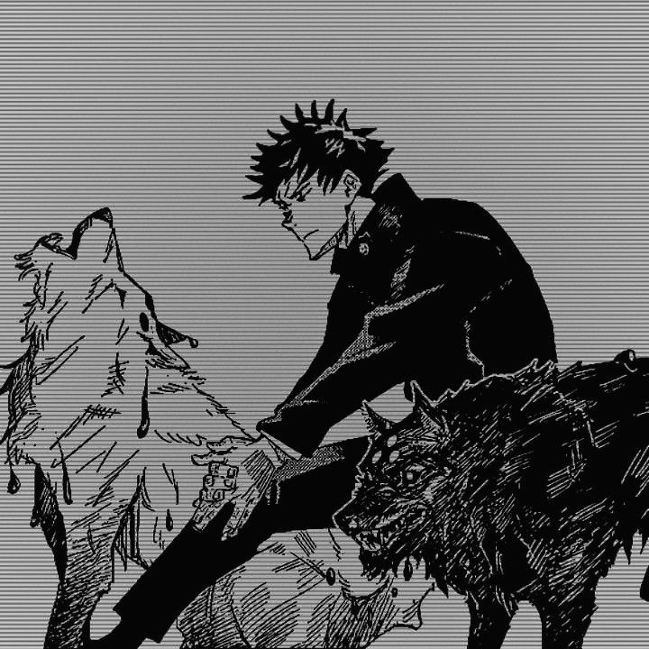

Os Caes Divinos sao um dos shikigamis mais marcantes do Megumi. Eles sao usados para perseguir maldicoes, rastrear inimigos e atacar em dupla, o que combina bem com o jeito estrategico dele lutar. Gosto deles porque mostram que o Megumi nao precisa partir para a forca bruta toda hora: ele observa, cerca o alvo e escolhe o melhor momento para agir.